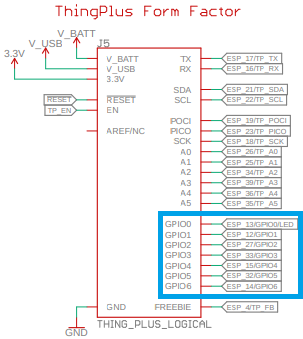
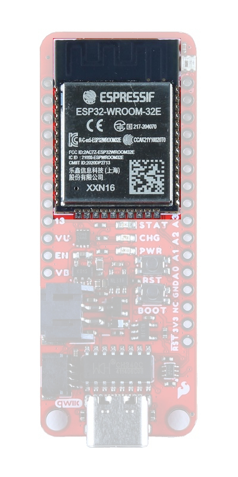
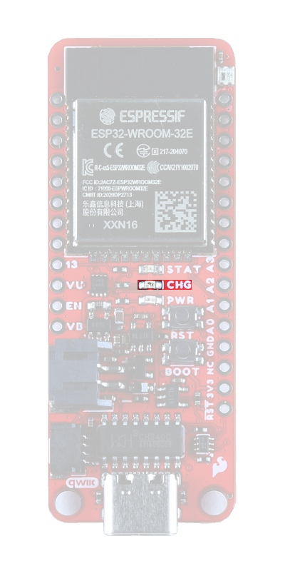
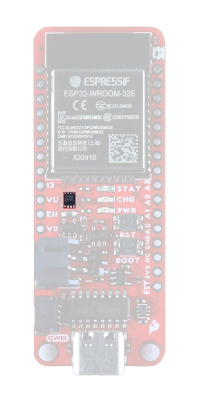
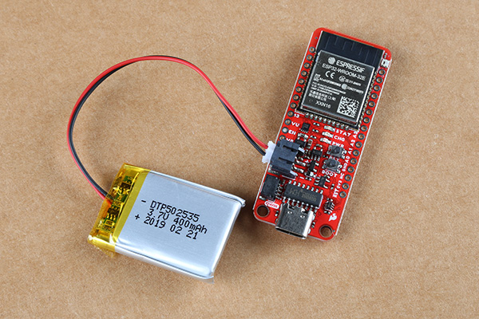

Single-Page View🔗
Introduction🔗
Info
This guide is specific to the ESP32 Thing Plus (USB-C) board variant. For the variants with the USB micro-B connector, please refer to the ESP32 Thing Plus hookup guide.
Introduction🔗
-
ESP32 WROOM Thing Plus (USB-C)
SKU: DEV-20168

-
The SparkFun ESP32-WROOM Thing Plus (USB-C) enjoys all the features of our previous ESP32 Thing Plus (Micro-B) boards, but with a few improvements. For this variant, we have included an SD card slot, upgraded to a USB-C connector, integrated an RGB status LED and battery fuel gauge, and provided two voltage regulators; offering separate 700mA current sources for the board and Qwiic connector. The board still retains its standardized 28-pin Feather footprint, 2-pin JST battery connector, and Qwiic connector like our other Thing Plus boards.
The ESP32-WROOM module on the board provides a rich set of peripherals, ranging from capacitive touch sensors, Hall sensors, SD card interface, Ethernet, high-speed SPI, UART, I2S, and I2C. With Espressif's ESP32 comprehensive development platform and Bluetooth low-energy support (i.e BLE, BT4.0, Bluetooth Smart) these boards are jam-packed with possibilities!
Purchase from SparkFun
Tip
The CH340C serial-to-UART bridge is used on this board. Therefore, a different driver installation is required from previous versions of the ESP32 Thing Plus.
Warning
Not Yet Implemented: The Arduino core for the ESP32 microcontroller is still a work in progress. There are a handful of peripherals and features that have yet to be implemented, including:
- Analog Output (
analogWrite([pin], [value]))- Alternative: LED Control API
- Pulse Counter
- SDIO
Timer/Real-Time Clock- Alternative: ESP32Time Arduino library
- TWAI
The peripherals are available (if, also, still in their infancy) in the IoT Development Framework for the ESP32. If your application requires any of the features above, consider giving the ESP-IDF a try! (Updated: June 2022.)
Required Materials🔗
To get started, users will need a few items. Now some users may have a few of these items, feel free to modify your cart accordingly.
- SparkFun Thing Plus - ESP32 WROOM (USB-C)
- USB 3.1 Cable A to C - 3 Foot - The USB interface serves two purposes: it powers the board and allows users to upload programs. (*If your computer doesn't have a USB-A slot, then choose an appropriate cable or adapter.)
- Computer with an operating system (OS) that is compatible with all the software installation requirements.
 USB 3.1 Cable A to C - 3 FootCAB-14743 |

SparkFun Thing Plus - ESP32 WROOM (USB-C)WRL-20168 |
Headers & Accessories🔗
Headers are great for development purposes, letting users swap parts with just a set of jumper wires. If you would like to add headers to your board, check out some of the options for the Thing Plus or Feather form factor boards below. For a full selection of our available Headers or Soldering Tools, click on the associated links.
 Break Away Headers - StraightPRT-00116 |

SparkFun Beginner Tool KitTOL-14681 |

Feather Stackable Header KitPRT-15187 |

Photon Header - 12 Pin FemalePRT-14321 |

Header - 8-pin Female (PTH, 0.1")PRT-11895 |
Tip
New to soldering? Check out our Through-Hole Soldering Tutorial for a quick introduction!

Li-Po Battery🔗
For mobile applications, users will want to pick up a single-cell LiPo battery from our catalog. Below, are a few available options:
 Lithium Ion Battery - 2AhPRT-13855 |

Lithium Ion Battery - 400mAhPRT-13851 |

Lithium Ion Battery - 1AhPRT-13813 |

Lithium Ion Battery - 110mAhPRT-13853 |
Jumper Modification🔗
To modify the jumpers, users will need soldering equipment and/or a knife.
 Solder Lead Free - 100-gram SpoolTOL-09325 |

Weller WLC100 Soldering StationTOL-14228 |

Chip Quik No-Clean Flux Pen - 10mLTOL-14579 |

Hobby KnifeTOL-09200 |
Tip
New to jumper pads? Check out our Jumper Pads and PCB Traces Tutorial for a quick introduction!

Suggested Reading🔗
As a more advanced development board, we will skip over the more fundamental tutorials (i.e. Ohm's Law and What is Electricity?). However, below are a few tutorials that may help users familiarize themselves with various aspects of the board.


One of the new, advanced features of the board is that it takes advantage of the Qwiic connect system. We recommend familiarizing yourself with the Logic Levels and I2C tutorials. Click on the banner above to learn more about Qwiic products.
Hardware Overview🔗
Info

All mentions of GPIO in this section will refer to the I/O pins of the ESP32-WROOM module as represented in the datasheets and pin numbers of the board definition in the ESP32 Arduino core. They do not correspond with the net names for the ThingPlus Form Factor device in the schematic. (The device in the schematic is primarily, used internally to facilitate the board design process; just ignore the naming of the GPIO0 - GPIO6 nets.)
Board Dimensions🔗
The board dimensions are illustrated in the drawing below. The listed measurements are in inches and the two mounting holes are compatible with 4-40 standoff screws.
Board dimensions (PDF) for the ESP32-WROOM Thing Plus, in inches.
USB-C Connector🔗
The USB connector is provided to power and program the board. For most users, it will be the primary programing interface for the ESP32.

USB-C connector on the ESP32-WROOM Thing Plus.
CH340 Serial-to-UART🔗
The CH340 allows the ESP32-WROOM to communicate with a computer/host device through the board's USB-C connection. This allows the board to show up as a device on the serial (or COM) port of the computer. Users will need to install the latest drivers for the computer to recognize the board (see Software Overview section).
Power🔗
The ESP32-WROOM Thing Plus only requires 3.3V to power the board. However, the simplest method to power the board is through the USB-C connector. Alternatively, the 3V3, VBAT, and VUSB pins can also be used to supply power to the board.
VUSB:- The maximum voltage for the LDOs and charge controller is 6V.
- The minimum voltage for the charge controller is 3.75V.
VBAT:- Should not be connected to anything other than a single-cell LiPo battery.
3V3:- Requires a regulated 3.3V.
- Only powers the board and not the Qwiic connector.
ESP32-WROOM Thing Plus power connections.
Below, is a general summary of the power circuitry on the board:
3V3- Provides a regulated 3.3V from the USB (5V) power and/or battery connections.- Used to power the ESP32-WROOM module, µSD card slot, WS2812 RGB LED, CH340C Serial-to-UART bridge, and power LED.
- The Qwiic connector is powered by its own voltage regulator, from the same power source(s).
- The 3.3V XC6222 LDO regulator can source up to 700mA.
- Output is controlled by the
ENpin on the board.
- Output is controlled by the
- Used to power the ESP32-WROOM module, µSD card slot, WS2812 RGB LED, CH340C Serial-to-UART bridge, and power LED.
VUSB- The voltage from the USB-C connector, usually 5V.- Power source for the entire board.
- Powers the 3.3V voltage regulators and the battery charging circuit for
VBAT.
- Powers the 3.3V voltage regulators and the battery charging circuit for
- Overides power from the battery through a P-channel MOSFET, when both are connected.
- Utilizes a BAT20J protection diode for the USB-C connection.
- Power source for the entire board.
VBAT- The voltage from the JST battery connector; meant for single cell LiPo batteries.GND- The common ground or the 0V reference for the voltage supplies.- Qwiic Connector - Provides a regulated 3.3V voltage from the USB (5V) power and/or battery connections.
- Operates independently from the
3V3pin, with its own voltage regulator. - The 3.3V XC6222 LDO regulator can source up to 700mA.
- Output is controlled by
GPIO 0of the ESP32-WROOM.
- Output is controlled by
- Operates independently from the
For more details, users can reference the schematic and the datasheets of the individual components in the power circuitry.
Power Status LED🔗
The red, PWR LED will light up once 3.3V is supplied to the board; however, for most users, it will light up when 5V is supplied through the USB connection or when a LiPo battery is connected to the JST connector.

ESP32-WROOM Thing Plus PWR status LED indicator.
Charging Circuit🔗
The charging circuit utilizes the MCP73831 linear charge management controller and is powered directly from the USB-C connector or VUSB. The controller is configured for a 500mA charge rate and active charging is indicated by the yellow, CHG LED. If the charge controller is shutdown or charging is complete, the CHG LED will turn off. For more information, please refer to the MCP73831 datasheet and the Indicator LEDs section below.
Power Control🔗
The power source for the XC6222 LDO voltage regulators is controlled by a P-channel MOSFET. In addition, the 3.3V regulated output from the XC6222 LDOs are enabled by the control pin (CE).

Circuits for the 3.3V power on the ESP32-WROOM Thing Plus.
The P-channel MOSFET operates based on the voltages at the MOSFET's gate and source pins. Depending on the power supplies connected to the board, the MOSFET will switch between the battery and USB-C connection as power sources for the XC6222 voltage regulators.
|
Power Source |
MOSFET | Power Control Description | |||
|---|---|---|---|---|---|
| Gate | Source | VGS = VGate - VSource |
MOSFET Operation |
||
| USB Only | VUSB = 5V | VUSB - Vf |
VUSB - (VUSB - Vf) VGS = Vf |
MOSFET Off RGS = ∞ Switch Open |
Power to the XC6222 is supplied by the USC-C connection. Power from the USB-C connection is passed through the Schottky diode. Due to the voltage drop from the Schottky diode, the gate threshold voltage for the MOSFET is positive and equivalent to the diode's forward voltage (Vf).Therefore, the MOSFET behaves as an open switch. |
| Battery Only | VUSB = 0V |
Dep. Mode: VSource = 0 Charged Cap.: VBatt = 3 - 4.2V |
Dep. Mode: VGS = 0 Charged Cap.: VUSB - VBatt = -VBatt -3V > VGS > -4.2V |
MOSFET On RGS = Low Switch Closed |
Power to the XC6222 is supplied from the battery connection. As a depletion type P-channel MOSFET, the mosfet acts as a normally closed switch when the gate threshold voltage is zero. Therefore, power from the battery is able to charge the capacitor and create a negative gate threshold voltage. The MOSFET remains behaving as a closed switch and power to the XC6222 is provided from the battery. |
| USB & Battery | VUSB = 5V | VUSB - Vf | VGS = Vf |
MOSFET Off RGS = ∞ Switch Open |
Power to the XC6222 is supplied by the USC-C connection. Power from the USB-C connection is passed through the Schottky diode. Due to the voltage drop from the Schottky diode, the gate threshold voltage for the MOSFET is positive and equivalent to the diode's forward voltage (Vf).Therefore, the MOSFET behaves as an open switch. |
The control pin (CE) of the XC6222 LDOs also provides an additional amount of control for the board's power. By default, the regulated 3.3V output is enabled. To disable and shutdown the output voltage from the XC6222, the control pin needs to be pulled low (i.e. shorted to ground (GND)). For more information, please refer to the XC6222 datasheet.
- The 3.3V power for the board (
3V3) is controlled by theENpin, which is broken out on the board. - The 3.3V power for the Qwiic connector is controlled by
GPIO 0of the ESP32-WROOM.

XC6222 control pins on the ESP32-WROOM Thing Plus.
Warning
⚡ Note: The BOOT button is also connected to GPIO 0. Therefore, pressing the BOOT button will momentarily disable power to the Qwiic connector.
Current Consumption🔗
According to the specifications, the ESP32-WROOM draws about 240 mA during RF transmissions. With the WiFi example in this tutorial, have measured it to average around 140 mA and peak at 300 mA while actively transceiving. The table below, summarizes the approximate current draw of the ESP32-WROOM Thing Plus (USB-C) for various operational conditions. The measurements in the table below, were made with the Nordic Power Profiler Kit II.
| Operation | Avg. Current Draw | |||
|---|---|---|---|---|
|
LiPo: 3.5V (Low < 5%) |
LiPo: 3.7V (~15%) |
LiPo: 4.2V (~100%) |
USB-C: 5V (No Battery) |
|
| Idle (Blank Code) |
63 mA 86 mA (peak) |
63.5 mA 89 mA (peak) |
64 mA 88.6 mA (peak) |
67 mA 89.9 mA (peak) |
| Idle: USB + Battery Power | -- | -- |
90.5 µA 721 µA (peak) |
N/A |
|
Idle: Battery Charging (Current from USB-C) |
395 mA 420 mA (peak) |
590 mA 600 mA (peak) |
> 110 mA (before shutdown) |
N/A |
| RGB (White @ 100%) |
78.4 mA 105.9 mA (peak) |
79 mA 106.8 mA (peak) |
79.9 mA 105.3 mA (peak) |
82.5 mA 108.2 mA (peak) |
|
WiFi Example (Transceiving) |
135 mA 295 mA (peak) |
137 mA 310 mA (peak) |
137 mA 307 mA (peak) |
140 mA 300 mA (peak) |
|
Deep Sleep Example (MCU Inactive) |
2.5 mA 2.95 mA (peak) |
2.5 mA 3 mA (peak) |
2.55 mA 3 mA (peak) |
2.85 mA 3.3 mA (peak) |
|
Deep Sleep Example (MCU Inactive + Jumpers Cut) |
842 µA 1.24 mA (peak) |
848 µA 1.23 mA (peak) |
866 µA 1.24 mA (peak) |
1.19 mA 1.58 mA (peak) |
It is possible for users to reach sub-mA power consumption levels with the deep sleep power modes. Using the TimerWakeUp Deep Sleep example code, the LED jumpers cut, and powering the board through the LiPo battery connection we measured a power consumption of 845 µA (990 µA peak) @ 3.7V while the MCU was inactive.

The current measurement from VBAT at 3.7V during deep sleep.
ESP32-WROOM🔗
This variant of the ESP32 Thing Plus is designed around the ESP32-WROOM module with 16MB of flash memory. Espressif's ESP32-WROOM module is a versitile, WiFi+BT+BLE MCU module that targets a wide variety of applications. At the core of this module is the ESP32-D0WDQ6 system on a chip (SoC) which is designed to be both scalable and adaptive. Its laundry list of features include:
|
 ESP32-WROOM module on the ESP32 Thing Plus (USB-C). |
Warning
Users should be aware of the following nuances and details of this board
- The ESP32-WROOM is only compatible with 2.4GHz WiFi networks; it will not work on the 5GHz bands.
- For details on the boot mode configuration, please refer to section 3.3 Strapping Pins of the ESP32-WROOM module datasheet.
Info
The ESP32-WROOM module has various power modes:
- Active - The chip radio is powered on. The chip can receive, transmit, or listen.
- Modem Sleep - The CPU is operational and the clock is configurable. The Wi-Fi/Bluetooth baseband and radio are disabled.
- Light Sleep - The CPU is paused. The RTC memory and RTC peripherals, as well as the ULP coprocessor are running.
- Deep Sleep - Only the RTC memory and RTC peripherals are powered on. The ULP coprocessor is functional.
- Hibernation - Only one RTC timer on the slow clock and certain RTC GPIOs are active.
- Off - Chip is powered off
For more information on the power management of the ESP32-WROOM module, pleaser refer to Section 3.7 and Tables: 8 and 17 of the ESP32 SoC Datasheet.
Debugging🔗
For users interested in debugging their code, the JTAG pins are broken out on the board. However, the debugging feature is only available through the ESP-IDF.
TMS:GPIO 14TDI:GPIO 12TCK:GPIO 13TDO:GPIO 15
Info
Users should be aware that GPIO 13 is connected to the STAT LED with a pull down resistor.
Firmware Download Mode🔗
Users can manually force the board into the serial bootloader with the BOOT button. Please, refer to the Boot Button section below for more information.
Peripherals and I/O🔗
Warning
Note: Users should be aware of the following nuances of this board
- ⚡ All the GPIO on the ESP32-WROOM Thing Plus are 3.3V pins.
- The I/O pins are not 5V-tolerant! To interface with higher voltage components, a logic level adapter is recommended.
- ⚡ There are electrical limitations to the amount of current that the ESP32-WROOM module can sink or source. For more details, check out the ESP32-WROOM module datasheet.
- There are some limitations to the ADC performance, see the Note from the ADC Characteristics section of the ESP32 SoC datasheet.
The ESP32-WROOM module has 26 multifunctional GPIO, of which, 21 I/O pins broken out into a feather form factor layout on this board. All of the ESP32-WROOM Thing Plus (USB-C) pins have a .1" pitch spacing for headers. With the pin multiplexing capabilities of the ESP32 SoC, various pins can have several functionalities. For more technical specifications on the I/O pins, please refer to the ESP32 SoC datasheet.
- 13x 12-bit analog to digital converter (ADC) channels
- 3x UARTs (only two are configured by default in the Arduino IDE, one UART is used for bootloading/debug)
- 3x SPI (only one is configured by default in the Arduino IDE)
- 2x I2C (only one is configured by default in the Arduino IDE)
- 2x I2S Audio
- 2x digital-to-analog converter (DAC) channels
- 16x 20-bit PWM outputs
- 8x Capacitive Touch Inputs
Graphical datasheet for the ESP32-WROOM Thing Plus (USB-C).
Info
Users should be aware of the following limitations for the board in the Arduino IDE.
- Not all of the features, listed above, are available in the Arduino IDE. For the full capabilities of the ESP32, the Espressif IDF should be utilized.
- Only one I2C bus is defined.
- Only two UART interfaces are available.
- UART (USB):
Serial RX/TXPins:Serial1- Only one SPI bus is defined.
For digital pins, users will need to declare the pinMode() (link) in the setup of their sketch (programs written in the Arduino IDE) for the pins used.
Input🔗
When configured properly, an input pin will be looking for a HIGH or LOW state. Input pins are High Impedance and takes very little current to move the input pin from one state to another.
Output🔗
When configured as an output the pin will be at a HIGH or LOW voltage. Output pins are Low Impedance: This means that they can provide a relatively substantial amount of current to other circuits.
Warning
⚡ There are electrical limitations to the amount of current that the ESP32-WROOM module can sink or source. For more details, check out the ESP32-WROOM module datasheet.
Additional Functions🔗
There are several pins that have special functionality in addition to general digital I/O. These pins and their additional functions are listed in the tabs below. For more technical specifications on the I/O pins, you can refer to the schematic, ESP32-WROOM module datasheet, ESP32 SoC datasheet, and documentation for the ESP32 Arduino core.
The analogRead(pin) function. (*The available ADC pins are highlighted in the image below.)
Info
By default, in the Arduino IDE, analogRead() returns a 10-bit value. To change the resolution of the value returned by the analogRead() function, use the analogReadResolution(bits) function.
Tip
To learn more about analog vs. digital signals, check out this great tutorial.
Analog input pins on the ESP32-WROOM Thing Plus.
The analogWrite(pin, value) function. (*Any I/O pin can be used for the PWM outputs; the available DAC pins, with true analog outputs, are highlighted in the image below.)
Info
By default, in the Arduino IDE, analogWrite() accepts an 8-bit value. To change the resolution of the PWM signal for the analogWrite() function, use the analogWriteResolution(bits) function.
(*The PWM output is not a true analog signal.)
Tip
Note: To learn more about pulse width modulation (PWM), check out this great tutorial.
Any I/O pin can be used for a PWM output, but these are the DAC pins on the ESP32-WROOM Thing Plus. (Click to enlarge)
The Serial) and the labeled UART I/O pins on the board (Serial1) can be accessed through the Arduino IDE using the serial communication class.
Info
By default, in the Arduino IDE, the
Serial- UART (USB)Serial1- Pins:RX/TX(GPIO 16/GPIO 17)
Tip
Note: To learn more about serial communication, check out this great tutorial.
Default UART ports on the ESP32-WROOM Thing Plus. (Click to enlarge)
Tip
We have noticed that with the ESP32 Arduino core, Serial.available() does not operate instantaneously. This is due to an interrupt triggered by the UART, to empty the FIFO when the RX pin is inactive for two byte periods:
- At 9600 baud,
hwAvailabletakes [number of bytes received+ 2] x 1 ms = 11 ms before the UART indicates that data was received from:\r\nERROR\r\n. - At 115200 baud,
hwAvailabletakes [number of bytes received+ 2] x .087 ms = ~1 ms before the UART indicates that data was received from:\r\nERROR\r\n.
For more information, please refer to this chatroom discussion.
The GPIO 18 (SCK), GPIO 19 (POCI), GPIO 23 (PICO). These pins share the same SPI bus as the µSD card slot, which utilizes pin 5 (SS) for its chip select. In order to utilize the other SPI ports or objects, users will need to create a custom SPI object and declare which pins to access.
Info
To comply with the latest OSHW design practices, we have adopted the new SPI signal nomenclature (SDO/SDI and PICO/POCI). The terms Master and Slave are now referred to as Controller and Peripheral. The MOSI signal on a controller has been replaced with SDO or PICO. Please refer to this announcement on the decision to deprecate the MOSI/MISO terminology and transition to the SDO/SDI naming convention.
| SCK | GPIO 18 (SCK) |
|---|---|
| SDI or POCI | GPIO 19 (MISO) |
| SDO or PICO | GPIO 23 (MOSI) |
| CS (µSD Card) | GPIO 5 (SS) |
Tip
To learn more about the serial peripheral interface (SPI) protocol, check out this great tutorial.
Default SPI bus connections on the ESP32-WROOM Thing Plus. (Click to enlarge)
The GPIO 21 (SDA) and GPIO 22 (SCL). These pins share the same I2C bus with the Qwiic connector and MAX17048 fuel gauge. In order to utilize the other I2C ports, users will need to create a custom Wire object and declare which pins to access.

| SCL | GPIO 22 (SCL) |
|---|---|
| SDA | GPIO 21 (SDA) |
Tip
To learn more about the inter-integrated circuit (I2C) protocol, check out this great tutorial.
Default I2C bus connections for the ESP32-WROOM Thing Plus. (Click to enlarge)
Buttons🔗
There are two buttons on ESP32-WROOM Thing Plus; a RST and BOOT button.
Reset Button🔗
The RST (reset) button allows users to reset the program running on the ESP32-WROOM module without unplugging the board.
RST button on the ESP32-WROOM Thing Plus.
Boot Button🔗
The BOOT button can be used to force the board into the serial bootloader. Holding down the BOOT button, while connecting the board to a computer through its USB-C connector or resetting the board will cause it to enter the Firmware Download mode. The board will remain in this mode until it power cycles (happens automatically after uploading new firmware) or the RST button is pressed.
- Hold the BOOT button down.
- Reset the MCU.
- While unpowered, connect the board to a computer with through the USB-C connection.
- While powered, press the RST button.
- Release the BOOT button.
- After programming is completed, reboot the MCU.
- Press the RST button.
- Power cycle the board.

BOOT button on the ESP32-WROOM Thing Plus.
Warning
⚡ The BOOT button is also connected to GPIO 0, which controls the voltage output to the Qwiic connector. Therefore, pressing the BOOT button will momentarily disable power to the Qwiic connector.
Indicator LEDs🔗
There are four indicator LEDs on the ESP32-WROOM Thing Plus:
PWR: Power (Red)CHG: Battery Charging (Yellow)13:GPIO 13(Blue)WS2812:GPIO 02(RGB)
Power LED🔗
The red, power (PWR) LED will light up once 3.3V is supplied to the board. For most users, it will light up when 5V is supplied through the USB connection and/or when a LiPo battery is attached to the JST connector.
ESP32-WROOM Thing Plus PWR status LED indicator.
Battery Charging LED🔗
The yellow, battery charging (CHG) LED indicates the status of the MCP73831 charge management controller. The LED will shut off when no battery is present, when the charge management controller is in standby (after the battery charging has been completed), or when the charge management controller is shutdown. The LED will illuminate when the charge management controller is in the process of charging the battery. For more information, please refer to the MCP73831 datasheet.
|
 The battery charging ( CHG) LED indicator on the ESP32-WROOM Thing Plus. (Click to enlarge)
|
|
STAT LED🔗
The blue, status (STAT) LED is typically used as a test or status LED to make sure that a board is working or for basic debugging. This indicator is connected to GPIO 13.
The status (STAT) LED indicator on the ESP32-WROOM Thing Plus.
WS2812 RGB LED🔗
The WS2812 RGB LED is controlled with a 24-bit (GRB) data signal. This indicator is connected to GPIO 02 and the digital output pin from the LED is available through a test point. For more information, please refer to the WS2812C datasheet.

WS2812 LED indicator on the ESP32-WROOM Thing Plus.
Info
The latest ESP32 Arduino core, now provides a basic RGB LED driver for a WS2812 (or NeoPixel) LED populated the board. For an example of how to utilize the RGB LED driver check out the BlinkRGB example code, which can be accessed from the File drop down menu (i.e File > Examples > ESP32 > GPIO > BlinkRGB).
µSD Slot🔗
Info
To comply with the latest OSHW design practices, we have adopted the new SPI signal nomenclature (SDO/SDI and PICO/POCI). The terms Master and Slave are now referred to as Controller and Peripheral. Please refer to this announcement on the decision to transition to the new naming convention.
The ESP32-WROOM Thing Plus (USB-C) includes an µSD card slot. This is great for data logging applications or storing files. The µSD card slot is connected to the following dedicated GPIO:
GPIO 5:DATA 3/CSN/A:DATA 2N/A:DATA 1GPIO 19:DATA 0/POCI(or Peripheral'sSDO)GPIO 18:CLK/SCKGPIO 23:CMD/PICO(or Peripheral'sSDI)
µSD card slot on the ESP32-WROOM Thing Plus.
Jumpers🔗
There are two jumpers on the back of the board that can be used to easily modify the hardware connections on the board.
- SHLD - This jumper can be used to disconnect the USB shield from
GND. - PWR - This jumper can be used to remove power to the
PWRLED. - CHG LED - This jumper can be used to remove power to the
CHGLED.- Avoid cutting the box's silkscreen; there are traces under it:

Traces around theCHG LEDjumper. (Click to enlarge)
- Avoid cutting the box's silkscreen; there are traces under it:

Info
Never modified a jumper before? Check out our Jumper Pads and PCB Traces tutorial for a quick introduction!
The jumpers on the back of the ESP32-WROOM Thing Plus.
Primary I2C Bus🔗
The Qwiic connector and battery fuel gauge are attached to the primary I2C bus. The primary I2C bus for this board utilizes the pin connections, detailed in the table below:
| Connection | VDD |
GND |
SCL |
SDA |
|---|---|---|---|---|
|
Battery Fuel Gauge (MAX17048) |
VBAT |
GND | GPIO 22 |
GPIO 21 |
| Qwiic Connector |
GPIO 0(Enables 3.3V) |
GND | GPIO 22 |
GPIO 21 |
Battery Fuel Gauge🔗
The MAX17048 fuel gauge measures the approximate charge or discharge rate, state of charge (SOC) (based on ModelGauge algorithm), and voltage of a connected battery. Additionally, the chip is powered directly from VBAT, when a LiPo battery is connected. For more information, please refer to the MAX17048 datasheet.
|
 The MAX17048 fuel gauge on the ESP32-WROOM Thing Plus. (Click to enlarge) |
|
Info
The Alert pin for the MAX17048 is not connected and cannot be utilized.
Qwiic Connector🔗
A Qwiic connector is provided for users to seamlessly integrate with SparkFun's Qwiic Ecosystem.
Qwiic connector and I2C pins on the ESP32-WROOM Thing Plus.
Power Control🔗
In order to enable power for the Qwiic connector, users must toggle GPIO 0 high. This enables the power output from the XC6222 LDO regulator to the Qwiic connector, which can sources up to 700mA at 3.3V . In order to conserve battery power or in low power applications, users will can toggle GPIO 0 low, to disable the power to the Qwiic connector.
Warning
⚡ GPIO 0 is also connected to the BOOT button. Therefore, pressing the BOOT button will momentarily disable power to the Qwiic connector.
What is Qwiic?🔗
The Qwiic system is intended a quick, hassle-free cabling/connector system for I2C devices. Qwiic is actually a play on words between "quick" and I2C or "iic".
Features of the Qwiic System
|
Keep your soldering iron at bay Cables plug easily between boards making quick work of setting up a new prototype. We currently offer three different lengths of Qwiic cables as well as a breadboard friendly cable to connect any Qwiic enabled board to anything else. Initially you may need to solder headers onto the shield to connect your platform to the Qwiic system but once that’s done it’s plug and go! |
 Qwiic cables connected to Spectral Sensor Breakout |
|
Polarized Connector - Minimize your mistakes How many times have you swapped the SDA and SCL wires on your breadboard hoping the sensor will start working? The Qwiic connector is polarized so you know you’ll have it wired correctly, every time, from the start. The PCB connector is part number SM04B-SRSS (Datasheet) or equivalent. The mating connector used on cables is part number SHR04V-S-B or equivalent. This is a common and low cost connector. |
 1mm pitch, 4-pin JST connector |
|
Daisy Chain - Expand with ease It’s time to leverage the power of the I2C bus! Most Qwiic boards will have two or more connectors on them allowing multiple devices to be connected.
|

{kind=link}
{kind=link}
{kind=link}
{kind=link}
{kind=link}
{kind=link}
{kind=link}
{kind=link}
{kind=link}
{kind=link}
{kind=link}
{kind=link}
{kind=link}
{kind=link}
Hardware Assembly🔗
USB Programming🔗
The USB connection is utilized for programming and serial communication. Users only need to plug their ESP32-WROOM Thing Plus into a computer using a USB-C cable.
{kind=link}
The ESP32-WROOM Thing Plus with USB-C cable attached.
Battery🔗
For remote IoT applications, a Li-Po battery can be connected. Additionally, users may be interested in utilizing a solar panel and USB-C cable to recharge their battery.
|

The ESP32-WROOM Thing Plus with a battery connected. (Click to enlarge) |

Solar Panel Charger - 10WTOL-16835 |

USB 3.1 Cable A to C - 3 FootTOL-14743 |
{kind=link}
Warning
DO NOT remove batteries by pulling on their wires. Instead, it is recommended that pair of dikes (i.e. diagonal wire cutters), pliers, or tweezers be used to pull on the JST connector housing, to avoid damaging the battery wiring.
{kind=link}
Using a pair of dikes to disconnect a battery. (Click to enlarge)
Headers🔗
The pins for the ESP32-WROOM Thing Plus are broken out to 0.1"-spaced pins on the outer edges of the board. When selecting headers, be sure you are aware of the functionality you need. If you have never soldered before or need a quick refresher, check out our How to Solder: Through-Hole Soldering guide.

Soldering headers to the ESP32-WROOM Thing Plus.
The Feather Stackable Header Kit is a great option as it allows users to stack shields (w/ Feather footprint) or it can be placed on a breadboard; while the pins are still accessible from the female/male headers.
µSD Card Slot🔗
The ESP32-WROOM Thing Plus (USB-C) includes an µSD card slot on the back of the board. The cardholder functions through a push/pull operation. (The card slot doesn't include a spring retention mechanism; cards are held in place through friction.)

Users can slide-in or pull-out a µSD card from the cardholder.
Qwiic Devices🔗
The Qwiic system allows users to effortlessly prototype with a Qwiic compatible I2C device without soldering. Users can attach any Qwiic compatible sensor or board, with just a Qwiic cable. (*The example below, is for demonstration purposes and is not pertinent to the board functionality or this tutorial.)

The BME688 environmental and VL53L1X distance Qwiic sensor boards connected to the ESP32-WROOM Thing Plus.
Software Overview🔗
CH340 Driver🔗
Users will need to install the appropriate driver for their computer to recognize the serial-to-UART chip on their board/adapter. Most of the latest operating systems will recognize CH340C chip on the board and automatically install the required driver.
To manually install the CH340 driver on their computer, users can download it from the WCH website. For more information, check out our How to Install CH340 Drivers Tutorial.

How to Install CH340 Drivers
Arduino IDE🔗
Info
For first-time users, who have never programmed before and are looking to use the Arduino IDE, we recommend beginning with the SparkFun Inventor's Kit (SIK), which includes a simpler board like the Arduino Uno or SparkFun RedBoard and is designed to help users get started programming with the Arduino IDE.
Most users may already be familiar with the Arduino IDE and its use. However, for those of you who have never heard the name Arduino before, feel free to check out the Arduino website. To get started with using the Arduino IDE, check out our tutorials below:

What is an Arduino? |

Installing Arduino IDE |

Installing an Arduino Library |

Installing Board Definitions in the Arduino IDE |
Install Board Definition🔗
Install the latest ESP32 board definitions in the Arduino IDE.

Installing Board Definitions in the Arduino IDE
Info
For more instructions, users can follow this tutorial on Installing Additional Cores provided by Arduino. Users will also need the .json file for the Espressif Arduino core:
https://raw.githubusercontent.com/espressif/arduino-esp32/gh-pages/package_esp32_index.json
When selecting a board to program in the Arduino IDE, users should select the SparkFun ESP32 Thing Plus C from the Tools drop-down menu (_i.e. Tools > Board > ESP32 Arduino > SparkFun ESP32 Thing Plus C). Alternatively, users can also select the ESP32 Dev Module; however, they may lose some pin assignments (i.e. LED_BUILTIN).
{kind=link}
Select the SparkFun ESP32 Thing Plus C from the Tools drop-down menu in the Arduino IDE.
Troubleshooting Tips🔗
Need Help?
If you need technical assistance or more information on a product that is not working as you expected, we recommend heading on over to the SparkFun Technical Assistance page for some initial troubleshooting.
If you can't find what you need there, the SparkFun Forums is a great place to search product forums and ask questions.
Account Registration Required
If this is your first visit to our forum, you'll need to create a Forum Account to post questions.
Upload Issues🔗
If users have issues during the uploading process, they can try to manually force the board into the serial bootloader with the BOOT button. Holding down the BOOT button, while connecting the board to a computer through its USB-C connector or resetting the board will cause the MCU to enter the Firmware Download mode and its serial bootloader. The board will remain in this mode until it power cycles (which happens automatically after uploading new firmware) or the RST button is pressed.
- Hold the BOOT button down.
- Reset the MCU.
- While unpowered, connect the board to a computer through the USB-C connection.
- While powered, press the RST button.
- Release the BOOT button.
- After programming is completed, reboot the MCU.
- Press the RST button.
- Power cycle the board.
BOOT button on the ESP32-WROOM Thing Plus.
COM Port Not Shown🔗
If the board doesn't appear on a COM port, double check the correct driver has been installed. Unlike previous versions of the ESP32 Thing Plus, this variant requires the CH340 driver to be installed. For more information, check out our How to Install CH340 Drivers Tutorial.
How to Install CH340 Drivers
Users can also check their USB cable; some cables are power only. Try testing the cable with a smartphone or tablet to see if it appears as a device on the computer. If the phone/tablet doesn't appear, then the USB cable is power only.
Serial Stream Difficulties🔗
We have noticed that with the ESP32 Arduino core, Serial.available() does not operate instantaneously. This is due to an interrupt triggered by the UART, to empty the FIFO when the RX pin is inactive for two-byte periods:
- At 9600 baud,
hwAvailabletakes [number of bytes received+ 2] x 1 ms = 11 ms before the UART indicates that data was received from:\r\nERROR\r\n. - At 115200 baud,
hwAvailabletakes [number of bytes received+2] x .087 ms = ~1 ms before the UART indicates that data was received from:\r\nERROR\r\n.
For more information, please refer to this chatroom discussion.
µSD Card🔗
Make sure that the µSD card is compatible with the Arduino library being used for it. For example, the default SD Arduino library is only compatible with FAT16 or FAT32 file systems; therefore, the card capacity is limited to 16GB or 32GB and smaller. Another consideration is that the library was also written to only handle short 8.3 names for files.
Qwiic Connector Power🔗
For users having issues with the power to their Qwiic devices, don't forget that GPIO 0 controls the power output from the XC6222 LDO regulator to the Qwiic connector. Users must toggle GPIO 0 high to enable power for the Qwiic connector. In order to conserve battery power or in low-power applications, users will toggle GPIO 0 low, to disable the power to the Qwiic connector.
Note
GPIO 0 is also connected to the BOOT button. Therefore, pressing the BOOT button will momentarily disable power to the Qwiic connector.
Current Consumption🔗
For ultra-low power projects, these are the current consumption of the individual components, as specified in their datasheet:
|
|
Resources:🔗
Product Resources🔗
- Product Page
- Schematic (PDF)
- Eagle Files (ZIP)
- Board Dimensions (PDF)
- Graphical Datasheet (PDF)
- SFE Product Showcase Video
- GitHub Hardware Repo
Additional Resources🔗
- SparkFun Learn - Hookup Guide
- SparkFun Thing Plus Boards
- SparkFun Qwiic Connect System
- SparkFun Technical Assistance
Hardware Component Documentation🔗
- ESP32 Module
- Power Components
- Voltage Regulator: XC6222 (PDF)
- Battery:
- Charge Controller: MCP73831 (PDF)
- Fuel Gauge: MAX17048 (PDF)
- LED: WS2812 (PDF)
Manufacturer's Resources🔗
Espressif also provides great resources for their ESP32 module:
- ESP32 Product Resource Page
- Espressif's Forum for the ESP32
- Espressif GitHub Repositories
- ESP32 Arduino Core
.jsonfile needed for Epressif's ESP32 Arduino Core:
https://raw.githubusercontent.com/espressif/arduino-esp32/gh-pages/package_esp32_index.json
- ESP-IDF -- IoT Development Framework
- ESP32 Arduino Core